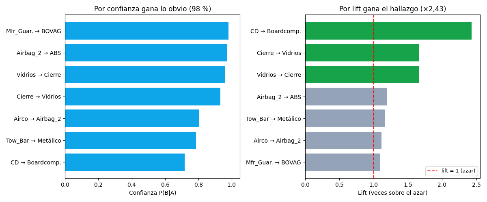

Bloque G · Frequent Itemsets · Lección 0040 · mar 17 nov
Reglas: confianza y lift (la confianza miente, el lift ordena)
Win de hoy: «garantía fábrica → BOVAG» tiene confianza 98 %… y lift 1,10 (obviedad: BOVAG la tienen casi todos). «CD → computadora» tiene confianza 72 % pero lift ×2,43: ese sí es un hallazgo.
1 · De combos a flechas: A → B
Un itemset frecuente (lección 0039 (mar 17)) se parte en regla: «si el auto trae A, trae B». Tres números la describen: el soporte (¿cuántos la cumplen?), la confianza P(B|A) (¿cuánto acertamos?) y el lift (¿cuánto mejor que el azar?).
2 · La confianza miente cuando B es común
BOVAG la tienen el 90 %: cualquier regla «X → BOVAG» tendrá confianza altísima sin decir nada. El lift corrige dividiendo por la frecuencia base de B: lift 1 = «A no informa nada sobre B».

El ranking se da vuelta por completo: las 3 reglas de confianza > 93 % tienen lift ≤ 1,66, y la de lift ×2,43 está 6ª en confianza. Regla de oro: filtrar por soporte, ordenar por lift, reportar los tres números.
Regenerar la figura (mismo resultado versionado en assets/img/toyota/):
python scripts/make_figures.py --only reglas-confianza-lift3 · Tabla completa de las 7 reglas
| Regla A → B | Soporte | Confianza | Lift | Lectura |
|---|---|---|---|---|
| Garantía fab. → BOVAG | 0,402 | 0,981 | 1,10 | Obvia: BOVAG la tienen todos |
| Airbag_2 → ABS | 0,703 | 0,973 | 1,20 | Alta pero poco informativa |
| Vidrios → Cierre | 0,540 | 0,962 | 1,66 | Pack eléctrico real |
| Cierre → Vidrios | 0,540 | 0,932 | 1,66 | La vuelta del pack (asimétrica) |
| Aire → Airbag_2 | 0,409 | 0,804 | 1,11 | Apenas sobre el azar |
| Gancho → Metálico | 0,219 | 0,787 | 1,17 | Soporte bajo, lift pobre |
| CD → Computadora | 0,157 | 0,717 | 2,43 | El hallazgo: pack tech |
Notá la asimetría: Cierre → Vidrios (0,932) ≠ Vidrios → Cierre (0,962). Las reglas tienen dirección; el lift, en cambio, es simétrico (1,66 en ambas): mide asociación mutua.
4 · Reglas en 10 líneas (reproducí la tabla)
import pandas as pd
E = ["ABS","Airbag_1","Airbag_2","Airco","Backseat_Divider",
"BOVAG_Guarantee","Boardcomputer","CD_Player","Central_Lock",
"Met_Color","Mfr_Guarantee","Mistlamps","Power_Steering",
"Powered_Windows","Sport_Model","Tow_Bar"]
B = pd.read_csv("../ToyotaCorolla.csv")[E]
def regla(a, b):
sop = (B[a] & B[b]).mean()
conf = sop / B[a].mean()
lift = conf / B[b].mean()
print(f"{a} -> {b}: sop={sop:.3f} conf={conf:.3f} lift={lift:.2f}")
regla("CD_Player", "Boardcomputer") # lift 2.43: hallazgo
regla("Mfr_Guarantee", "BOVAG_Guarantee") # conf 0.98, lift 1.10: humoTu turno: inventá dos reglas propias (ej. Airco → CD_Player) y decidí por lift
si descubriste algo o solo obviedad.
5 · Quiz (auto-chequeo inmediato)
6 · Fuente primaria y cierre
Para profundizar (1 fuente): Tan, Steinbach & Kumar, Introduction to Data Mining — cap. 6 (reglas de asociación). Más contexto en RESOURCES.
Siguiente (mié 18, orden Bloque G): 0041 · El algoritmo Apriori (mié 18): generar candidatos, podar con monotonicidad y contar — nivel por nivel.